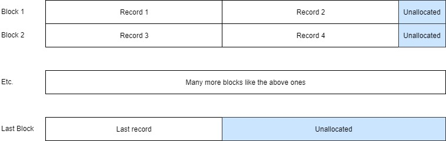
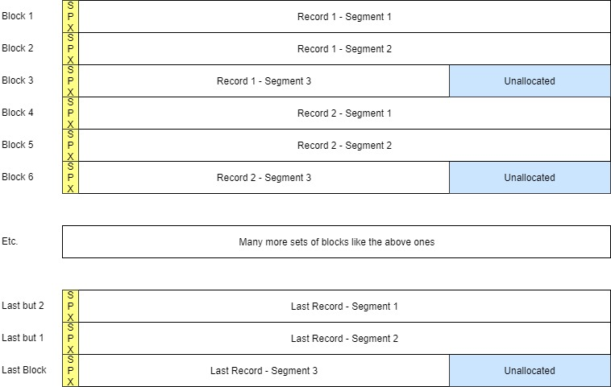
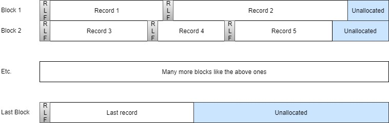
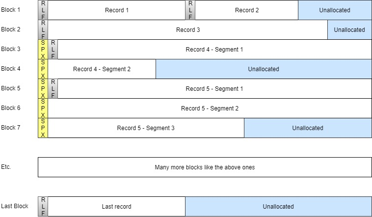
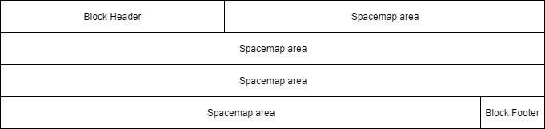
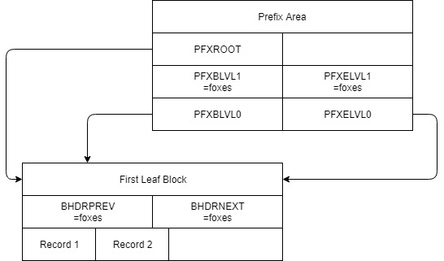

zVSAM V2 - Physical structure of the files
This document describes the file structure for implementing zVSAM V2 data sets. It contains the following major chapters:
Basic Concepts
Files, Blocks, Records
The logical unit of access or storage is the record. Yet the unit for any given I/O operation is the block. Block sizes may vary from 512 bytes to 16MB. Each block holds up to 255 records. For any given cluster component, choosing an appropriate block size is important. Block size can greatly affect not only performance, but also both internal and external storage consumption.
A cluster consists of one or more files that belong together and should be managed together. Whether you take a backup, perform a restore, or perform other administrative tasks, the files that make up a cluster should be managed alike. When creating a backup copy of a cluster or restoring a cluster, make sure no other processes try to access the data at the same time.
zVSAM implements a number of checks and balances to prevent inadvertent access to data that may have been compromised. Names and locations of files are managed. Tampering with files or file attributes may render the cluster unusable.
As a result, it is not possible to rename a zVSAM cluster or file. Unload and reload your cluster in order to move the data or to assign a different name to cluster or file.
Just like files in a cluster belong together and should be managed together, clusters in a sphere are logically connected and should be managed together. Again, failing to manage the files in a correct and comprehensive manner may render your data inaccessible.
Cluster types and Cluster Components
Each cluster consists of a data component and an index component as follows:
| Cluster type | Index content |
|---|---|
| ESDS | Index on XRBA |
| KSDS | Index on key value |
| RRDS | Index on RRN |
| LDS | No index |
| AIX | Index on alternate key value |
Record Formats
In zVSAM we recognize and support the following record formats:
| Format | Properties |
|---|---|
| F | Fixed. All records have the same length Records never span a Block boundary. |
| FS | Fixed Spanned. All records have the same length. Records may span a Block boundary. |
| V | Variable. Records have varying lengths. Records never span a Block boundary. |
| VS | Variable Spanned. Records have varying lengths. Records may or may not span a Block boundary. |
For ESDS, KSDS, and RRDS all record types are supported. For AIX only F and VS record formats are supported: F for unique, and VS for non-unique indexes.
Supported Record Formats per Cluster Type:
| Cluster Type | F | FS | V | VS |
|---|---|---|---|---|
| ESDS | Y | Y | Y* | Y* |
| KSDS | Y | Y | Y | Y |
| RRDS | Y | Y* | Y | Y* |
| LDS | N | N | N | N |
| AIX - unique | Y | N | N | N |
| AIX - non-unique | N | N | N | Y |
- * denotes a zVSAM extension *
For a unique AIX each record holds an alternate key value plus the primary key (KSDS) or XLRA (ESDS) of the associated record in the cluster's data component. This fixed configuration dictates a record type of F.
For a non-unique AIX each record holds an alternate key value and as many primary keys (KSDS) or XLRAs (ESDS) of associated records in the cluster's data component as there are records holding that specific alternate key value. The table of primary keys may vary in length from 1 to very large numbers. No block size is guaranteed to be large enough to hold the largest possible index record, therefore a record type of VS is mandated. When a non-unique index record needs to be split into segments, no primary key value or XLRA is ever split; i.e. only an exact number of these reside within a single segment of the record.
Supported Index-types per Cluster Type
| Cluster Type | Primary - Unique | AIX - unique | AIX - Non-unique |
|---|---|---|---|
| ESDS | Y* | Y | Y |
| KSDS | Y | Y | Y |
| RRDS | Y* | N | N |
| LDS | N | N | N |
- * denotes a zVSAM extension *
Concept of Fixed-length records stored in blocks
Disregarding block structure elements, F-type records are conceptually stored one after another, filling the block until no space is left. When remaining free space is insufficient to accommodate another record, that free space remains unallocated (marked in blue). The actual implementation is quite different, but we'll leave those details alone for the moment.

This holds for all cluster types, except LDS. In an LDS there is no block structure. Each block and each record holds 4096 bytes of data.
Below we show an example of records in a LDS:

Concept of Fixed-length Segmented records stored in blocks
Disregarding block structure elements, FS-type records are conceptually stored one after another, using a block for each segment and starting each record on a new block. Record size is expected to exceed block size, so the record is split into segments, the first segment is created to fill an entire block, and the rest of the record goes into a second segment, which is stored on the next block. Each segment is preceded by a Segment Prefix (SPX, marked in yellow). Depending on record size and usable block size, more than two segments may be needed to store the record. The actual implementation is quite different, but we'll leave those details alone for the moment.
Below we show an example where each record requires three blocks and is therefore split into three segments:

Concept of Variable-length records stored in blocks
Disregarding block structure elements, V-type records are conceptually stored one after another, filling the block until no space is left. When remaining free space is insufficient to accommodate another record, that free space remains unallocated (marked in blue). Every record is preceded by a Record Length Field (RLF, marked in grey). The actual implementation is quite different, but we'll leave those details alone for the moment.
Below we show an example showing how various numbers of records might fit into the blocks of the file:

Concept of Variable-length Segmented records stored in blocks
Disregarding block structure elements, VS-type records are conceptually stored one after another, filling the block until no space is left. Every record is preceded by a Record Length Field (RLF, marked in grey). When remaining free space is insufficient to accommodate a complete record, the record is placed on the next block. Only if the record size exceeds usable block size, the record is split into segments and each segment is prefixed with a Segment Prefix. The first segment is created to fill a block and the rest of the record goes into a second segment, which is stored on the next block. Each segment is preceded by a Segment Prefix (SPX, marked in yellow). Please note that the RLF occurs only once in each record, whereas each record segment has its own SPX.
Depending on record size and usable block size, more than two segments may be needed to store a record. The actual implementation is quite different, but we'll leave those details alone for the moment.
Below we show an example showing how various numbers of records might fit into the blocks of the file, or how a single record might occupy multiple blocks of the file:

File Structure
All zVSAM data is stored in physical files, as defined to the operating system. Each component consists of one file. This file is formatted as a zVSAM file. The structure of which is explained in the next set of chapters.
Please note: the hosting operating system may impose a limit on physical file size and not every host OS supports a physical file spanning a volume boundary of the storage device(s). Therefore, to support clusters that exceed the maximum size of a single physical file, in the future we may need to support clusters that consist of multiple files.
Structure of physical files
Every zVSAM file has a block size. The block being the basic unit of I/O. The first block of every file is the prefix block, which is always 4096 bytes in size. The prefix block holds information about the cluster, its data, and its structure.
Data in the prefix block are not accessible to user programs. However, selected fields in the prefix block can be queried using a SHOWCB ACB request.
All other blocks in the file have a user-defined blocksize. That is, the user defines the blocksize. All blocks in the file are created with that size, except the prefix block which is always 4096 bytes, irrespective of the size of the other blocks in the file. The file is assumed to logically begin with the first block after the prefix block.
There are 6 types of blocks that may occur in zVSAM files:
1) Prefix block – one for each file, being the first 4096 bytes of every file 2) Spacemap block – used to manage free space in the file 3) Data block – used to hold user data, or AIX data records (in an AIX only) 4) Index block – used to hold index information 5) ELIX block – used to index segmented (read: large) non-unique AIX records 6) Raw block – used to hold a block's worth of LDS data
Every block, except a raw block, has an internal structure, consisting of a block header, a list of record pointers (data and index blocks only), a block body and a block footer. The block header and footer have a fixed structure. The list of record pointers, if present, has a variable length. The block body contains record data and/or free space.
Raw blocks have no internal structure, as far as zVSAM is concerned. Any and all internal structure(s) in an LDS are to be maintained by the application program. Each of the 6 block types is explained in more detail below.
Prefix Block
The prefix block consists of the first 4096 bytes of every physical file. It contains meta-data defining the file and its attributes. It also contains various counters.
The prefix block consists of a block header immediately followed by the prefix area described below. The prefix block also contains other data fields, these are addressed from the prefix area. The prefix block ends with a block footer. A record pointer list is not present on the prefix block.
There are various pointer fields in the prefix area. These point to fields allocated elsewhere in the prefix block. Their exact addresses on the prefix block may vary.
The PFXDVOL@, PFXDPAT@, PFXDNAM@ pointers and the PFXXVOL@, PFXXPAT@, PFXXNAM@ all point to a halfword-prefixed string.
The PFXCTRS@ pointer addresses a separate area that holds various counters.
This area is expected to move into the catalog dataset in a future release.
The overall structure of the prefix block would look something like this (areas not to scale):

Spacemap Blocks
Spacemap blocks are used to manage available free space in a component. Each spacemap block has a size that matches the blocksize of all other blocks (except possibly the prefix block) in the component.
A component will hold as many spacemap blocks as needed to map all of its allocated blocks,
including all spacemap blocks but excluding the prefix block. Whenever a single spacemap block is not enough,
the spacemap blocks are chained together by means of the BHDRNEXT/BHDRPREV pointers in the block header area.
The spacemap chain starts/ends from the prefix block, fields PFXBMAP/PFXEMAP.
When a single spacemap block suffices, PFXBMAP and PFXEMAP will both point to that block.
Each spacemap block consists of a block header immediately followed by the spacemap area, which in turn is followed
directly by the block footer. No free space exists on a spacemap block. Thus, the last spacemap block may map blocks
that do not exist in the dataset. The bit settings for blocks beyond the PFXHXLRA should all be zero to indicate an unallocated block.
zVSAM is aware that any block beyond PFXHXLRA needs to be created and initialized before it can be allocated.
Conceptually, the overall structure of a spacemap block would look something like this (areas not to scale):

Data Blocks
Index Blocks
Raw Blocks
Structure of ESDS
Structure of KSDS
Structure of RRDS
Structure of LDS
Free Blocks
Block Structures
Block Header Structure
Every block (except raw blocks) has a block header. All block headers have the same structure. It is formatted as follows:
| Label | Offset | Field type | Function |
|---|---|---|---|
| ZVSAMHDR | DSECT | Block header area | |
| BHDREYE | X'000' | CL3 | =C'HDR' – eyecatcher to mark the area |
| BHDRSEQ# | X'003' | XL1 | Write control value |
| BHDRVER | X'004' | XL1 | Design sequence number |
| BHDR_V2 | =X'02' | Current design version number | |
| BHDRFLG1 | X'005' | XL1 | Flags |
| BHDR_PFX | =X'80' | Prefix block | |
| BHDR_MAP | =X'40' | Spacemap block | |
| BHDR_DTA | =X'20' | Data block | |
| BHDR_IDX | =X'10' | Index block | |
| BHDR_SEG | =X'08' | Segment block | |
| BHDR_LEF | =X'04' | Index leaf Block | |
| BHDR_INT | =X'02' | Index intermediate block | |
| BHDR_ROT | =X'01' | Index root block | |
| BHDR#REC | X'006' | XL1 | Nr of records on this block |
| BHDRXLVL | X'007' | XL1 | Index level |
| BHDRSELF | X'008' | XL8 | XLRA of this block |
| BHDRNEXT | X'010' | XL8 | XLRA of next block on chain |
| BHDRPREV | X'018' | XL8 | XLRA of previous block on chain |
| BHDRFRE@ | X'020' | XL3 | Offset of free area on this block |
| BHDRFLG2 | X'023' | XL1 | Flags |
| BHDR_ELX | =X'80' | ELIX block | |
| BHDRFREE | X'024' | XL3 | Length of free area on this block |
| XL2 | Reserved |
BHDRSEQ# is incremented by one every time the block is written out to the file.
The footer area contains a comparable field: BFTRSEQ#. Together they guard against incomplete writes.
BHDRXLVL indicates the index level. Zero is the leaf level. Index blocks are chained by level.
That is, for every index level in use there is a pair of pointers in the prefix block (PFXBLVLn/PFXELVLn)
that starts and ends the chain for that level.
BHDRSELF contains the block's own XLRA. This helps to guard against misdirected reads and/or writes.
BHDRNEXT/BHDRPREV point to the next and previous block on the chain. Which chain this is, depends on the BHDRFLAG setting,
and, if this is an index block, by the BHDRXLVL value. For the prefix block, these two fields are set to foxes.
Free blocks are not on any chain, for these blocks the BHDRPREV/BHDRNEXT pointers can have any value.
Segmented records are a special case. Segments of a segmented record never share their block with other data.
The block holding the first segment is part of the data chain. A block holding a non-first segment is part of the segment chain.
A block that holds a record's first segment has an SPX pointing into the segment chain at the block holding the second segment.
From the second segment the BHDRPREV/BHDRNEXT chain can be used to sequentially read subsequent segments up to the last segment of the record.
The following table summarizes the way that blocks in the file are chained from the prefix block. Please note that free data blocks do not reside on any chain. Nor does the prefix block.
| Block Type | Begin of chain | End of chain |
|---|---|---|
| Prefix | foxes | foxes |
| Spacemap | PFXBMAP | PFXEMAP |
| Data (in use) | PFXBDATA | PFXEDATA |
| Data (non-first segment) | PFXBSEGM | PFXESEGM |
| Data (free) | foxes | foxes |
| Index | PFXBLVLn | PFXELVLn |
| Free | n.a. | n.a. |
Example 1: Assume we have a cluster with three data blocks holding unsegmented records. The blocks are on the data chain as outlined in the picture below. Please note that all depicted pointers are block pointers. Each pointer thus originates with the indicated field, and ends at the block it points to. The location where the arrows attach has no meaning since it's a block pointer.

Example 2: Now suppose we have a cluster with three data blocks, the first block holding two unsegmented records, the second block holding the first segment of a record consisting of three segments and the third block holding the first segment of a record consisting of two segments.
In the picture we show the data chain as a solid line (as in the picture above), we show the segment chain as a dotted line, and we show the SPX pointers as fat lines.
The picture shows the prefix area's pointer to start/end block of both the data chain and the segment chain. It also shows the first and second block on each chain pointing to one another. Same thing for the second and third block on each chain.
The picture also shows that the SPX only occurs on the first segment of each segmented record.
As in the example above, all depicted pointers are block pointers. Each pointer originates with the indicated field, and ends at the block it points to. The location where the arrows attach has no meaning since it's a block pointer.

Example 3: This example is the same as the example 2 – the only difference being that now all segments go onto the segment chain. The SPX resides by itself on the data block and just points to the first segment on the segment chain.

Example 4: This example shows an index of only one block, holding two record pointers.

Example 5: This example shows the index after adding three more record pointers, causing the only index block to overflow and split. Now there are two leaf blocks, still on the LVL0 chain, and a new root block has been created on the LVL1 chain.

Block Footer Structure
Every block (except raw blocks) has a block footer. All block footers have the same structure. It is formatted as follows:
| Label | Offset | Field type | Function |
|---|---|---|---|
| ZVSAMFTR | DSECT | Block header area | |
| BFTREYE | X'000' | CL3 | =C'FTR' – eyecatcher to mark the area |
| BFTRSEQ# | X'003' | XL1 | Write control value |
BFTRSEQ# is incremented by one every time the block is written out to the file.
The header area contains a comparable field: BHDRSEQ#. Together they guard against incomplete writes.
Record Pointer List Structure
Every block that contains data records contains a record pointer list. Records are accessible only through their Record Pointer or RPTR. Every entry in the list corresponds with a single record on the block. The last byte of a record's XLRA is the index into the Record Pointer List. Index value of X'00' is reserved for block pointers; values X'01' through X'FF' inclusive are usable as RPTR index values. The difference of 1 always needs to be taken into account when indexing the RPTR list.
The RPTR list always follows the block header directly.
The number of entries on the RPTR list varies with the number of records stored on the block (BHDR#REC) and is terminated
by RPTR_END to mark the end of the list.
Record Pointer List entries are formatted as follows:
| Label | Offset | Field type | Function |
|---|---|---|---|
| ZVSAMRPT | DSECT | Record Pointer | |
| RPTRFLGS | X'000' | XL1 | Flag byte |
| RPTR_ACT | =X'80' | Active record | |
| RPTR_MTY | =X'40' | Empty record slot | |
| RPTR_DIS | =X'20' | Record has been displaced to another block | |
| RPTR_MOV | =X'10' | New location of a moved record | |
| RPTR_SEG | =X'08' | Record segment | |
| RPTR_END | =X'01' | Terminating entry | |
| RPTRREC@ | X'001' | AL3 | Record offset within block - foxes when RPTR_END is set |
RPTR_ACT and RPTR_MTY are mutually exclusive. Either one must be set, otherwise the RPTR list is compromised and data access will fail.
When RPTR_DIS is set, the RPTR addresses a Displaced Record Pointer, rather than the actual data.
The format of a Displaced Record Pointer is as follows:
| Label | Offset | Field type | Function |
|---|---|---|---|
| ZVSAMDRP | DSECT | Displaced Record Pointer | |
| DRPIXLRA | X'000' | XL8 | Indirect XLRA = location of actual record data |
Free Space
Free space on any block is maintained in a single extent, usually but not necessarily following the RPTR list and preceding the stored record data.
Additionally, there may be empty records on the block. These are marked with the RPTR_MTY bit in their RPTR list entry.
These empty record slots are available for reuse and may (if needed) be merged with each other and with the available
free space on the block to create a larger area of free space to satisfy an allocation request.
Prefix Area Structure
The prefix area occurs only on the prefix block. It is located directly after the block header on the prefix block. No record pointer list lies in between.
The prefix area contains basic structural information about the file. It has the following format:
| Label | Offset | Field type | Function |
|---|---|---|---|
| ZVSAMPFX | DSECT | Prefix area | |
| PFXEYE | X'000' | CL4 | Eye catcher |
| PFXZPFX | =C'zPFX' | ||
| PFXRCLEN | X'004' | XL4 | record length, max length if variable |
| PFXKYLEN | X'008' | XL4 | key length |
| PFXKYOFF | X'00C' | XL4 | key offset, excluding SDW/RDW |
| PFXDVOL@ | X'010' | XL3 | offset to the data component's volume label |
| PFXDNAM@ | X'013' | XL3 | offset to the data component's filename |
| PFXDPAT@ | X'016' | XL3 | offset to the data component's pathname |
| PFXXVOL@ | X'019' | XL3 | offset to the index component's volume label |
| PFXXNAM@ | X'01C' | XL3 | offset to the index component's filename |
| PFXXPAT@ | X'01F' | XL3 | offset to the index component's pathname |
| PFXIXLVL | X'022' | XL1 | nr of index levels |
| PFXALTHR | X'023' | XL1 | allocation redrive threshold |
| PFXBLKSZ | X'024' | XL4 | blocksize used for this file (except prefix block) |
| PFXHXLRA | X'028' | XL8 | XLRA of highest allocated block |
| PFXBMAP | X'030' | XL8 | XLRA of first spacemap block |
| PFXEMAP | X'038' | XL8 | XLRA of last spacemap block |
| PFXMAPNW | X'040' | XL8 | XLRA of spacemap block last used for allocation |
| PFXBDATA | X'048' | XL8 | XLRA of first data block |
| PFXEDATA | X'050' | XL8 | XLRA of last data block |
| PFXBSEGM | X'058' | XL8 | XLRA of first segment block |
| PFXESEGM | X'060' | XL8 | XLRA of last segment block |
| PFXROOT | X'068' | XL8 | XLRA of root index block |
| PFXBLVL0 | X'070' | XL8 | XLRA of Header Block index level 0 |
| PFXELVL0 | X'078' | XL8 | XLRA of End Block index level 0 |
| PFXBLVL1 | X'080' | XL8 | XLRA of Header Block index level 1 |
| PFXELVL1 | X'088' | XL8 | XLRA of End Block index level 1 |
| PFXBLVL2 | X'090' | XL8 | XLRA of Header Block index level 2 |
| PFXELVL2 | X'098' | XL8 | XLRA of End Block index level 2 |
| PFXBLVL3 | X'0A0' | XL8 | XLRA of Header Block index level 3 |
| PFXELVL3 | X'0A8' | XL8 | XLRA of End Block index level 3 |
| PFXBLVL4 | X'0B0' | XL8 | XLRA of Header Block index level 4 |
| PFXELVL4 | X'0B8' | XL8 | XLRA of End Block index level 4 |
| PFXBLVL5 | X'0C0' | XL8 | XLRA of Header Block index level 5 |
| PFXELVL5 | X'0C8' | XL8 | XLRA of End Block index level 5 |
| PFXBLVL6 | X'0D0' | XL8 | XLRA of Header Block index level 6 |
| PFXELVL6 | X'0D8' | XL8 | XLRA of End Block index level 6 |
| PFXBLVL7 | X'0E0' | XL8 | XLRA of Header Block index level 7 |
| PFXELVL7 | X'0E8' | XL8 | XLRA of End Block index level 7 |
| PFXBLVL8 | X'0F0' | XL8 | XLRA of Header Block index level 8 |
| PFXELVL8 | X'0F8' | XL8 | XLRA of End Block index level 8 |
| PFXBLVL9 | X'100' | XL8 | XLRA of Header Block index level 9 |
| PFXELVL9 | X'108' | XL8 | XLRA of End Block index level 9 |
| PFXBLVLA | X'110' | XL8 | XLRA of Header Block index level 10 |
| PFXELVLA | X'118' | XL8 | XLRA of End Block index level 10 |
| PFXBLVLB | X'120' | XL8 | XLRA of Header Block index level 11 |
| PFXELVLB | X'128' | XL8 | XLRA of End Block index level 11 |
| PFXBLVLC | X'130' | XL8 | XLRA of Header Block index level 412 |
| PFXELVLC | X'138' | XL8 | XLRA of End Block index level 12 |
| PFXBLVLD | X'140' | XL8 | XLRA of Header Block index level 13 |
| PFXELVLD | X'148' | XL8 | XLRA of End Block index level 13 |
| PFXBLVLE | X'150' | XL8 | XLRA of Header Block index level 14 |
| PFXELVLE | X'158' | XL8 | XLRA of End Block index level 14 |
| PFXBLVLF | X'160' | XL8 | XLRA of Header Block index level 15 |
| PFXELVLF | X'168' | XL8 | XLRA of End Block index level 15 |
| PFXMAPOF | X'170' | XL3 | offset within spacemap block to last used byte for allocation |
| PFXFRSPC | X'173' | XL1 | initial freespace % within block |
| PFXFRBLK | X'174' | XL2 | initial freespace blocks |
| PFXFRINT | X'176' | XL2 | initial freespace interval between free blocks |
| PFXFFLGS | X'178' | XL1 | file flags |
| PFX_ESDS | =X'80' | ESDS | |
| PFX_KSDS | =X'40' | KSDS | |
| PFX_RRDS | =X'20' | RRDS | |
| PFX_LDS | =X'10' | LDS | |
| PFX_AIX | =X'08' | AIX | |
| PFX_INDX | =X'01' | index component | |
| PFXRFLGS | X'179' | XL1 | record flags |
| PFX_RFIX | =X'80' | 1=fixed, 0=variable | |
| PFX_RSPN | =X'40' | 1=spanned, 0=non-spanned | |
| PFX_KUNQ | =X'20' | 1=AIX unique, 0=AIX non-unique | |
| PFX_AIXT | =X'10' | 1=AIX on KSDS, 0=AIX on ESDS | |
| X'17A' | XL6 | reserved | |
| PFXDTSKC | X'180' | XL8 | STCK of data component creation |
| PFXIXSKC | X'188' | XL8 | STCK of index component creation |
| PFXDTSKU | X'190' | XL8 | STCK of last update to data component |
| PFXIXSKU | X'198' | XL8 | STCK of last update to index component |
| PFXMAPDT | X'1A0' | XL8 | STCK of last allocation action |
| PFXCTRS@ | X'1A8' | XL3 | pointer to counters area |
| X'1AB' | XL5 | reserved |
There are 7 pointer fields in the prefix area. These point to fields allocated elsewhere in the prefix block. Their exact addresses on the prefix block may vary.
The PFXDVOL@, PFXDPAT@, PFXDNAM@ pointers and the PFXXVOL@, PFXXPAT@, PFXXNAM@ all point to a halfword-prefixed string.
The PFXCTRS@ pointer addresses a separate area that holds various counters.
This area is expected to move into the catalog dataset in a future release.
Counters Area Structure
The counters area occurs only on the prefix block. Its location can be found by following the prefix area's PFXCTRS@ field.
The counters area has the following format:
| Label | Offset | Field type | Function |
|---|---|---|---|
| ZVSAMCTR | DSECT | Counters area | |
| CTREYE | X'000' | CL4 | Eyecatcher |
| CTRZCTR | ='zCTR' | ||
| CTRAVGRL | X'004' | XL4 | average record length |
| CTRAVSPAC | X'008' | XL8 | available space |
| CTRHALCRBA | X'010' | XL8 | high-allocated RBA |
| CTRENDRBA | X'018' | XL8 | high water mark for the component |
| CTRNCIS | X'020' | XL8 | nr of block-split operations |
| CTRNDELR | X'028' | XL8 | nr of delete operations |
| CTRNEXCP | X'030' | XL8 | nr of I/O operations |
| CTRNEXT | X'038' | XL8 | nr of physical files allocated (always 1) |
| CTRNINSR | X'040' | XL8 | nr of insert operations |
| CTRNLOGR | X'048' | XL8 | nr of records in this component |
| CTRNRETR | X'050' | XL8 | nr of retrieval operations |
| CTRNNUIW | X'058' | XL8 | nr of zVSAM writes |
| CTRNUPDR | X'060' | XL8 | nr of updates |
| CTRSDTA | X'068' | XL8 | uncompressed data size |
| CTRSTMST | X'070' | XL8 | system timestamp of last close operation |
| CTRNUIW | X'078' | XL8 | nr of user writes |
| CTRLOKEY@ | X'080' | XL3 | pointer to lowest valid key value |
| X'083' | XL5 | Reserved |
The values in the counters area are maintained to support SHOWCB ACB and/or TESTCB ACB requests. They are mapped as follows:
| Label | Keyword | SHOWCB | TESTCB |
|---|---|---|---|
| CTRAVSPAC | AVSPAC | ACB | ACB |
| CTRHALCRBA | HALCRBA | ACB | n.a. |
| CTRENDRBA | ENDRBA | ACB | ACB |
| CTRNCIS | NCIS | ACB | ACB |
| CTRNDELR | NDELR | ACB | ACB |
| CTRNEXCP | NEXCP | ACB | ACB |
| CTRNEXT | NEXT | ACB | ACB |
| CTRNINSR | NINSR | ACB | ACB |
| CTRNLOGR | NLOGR | ACB | ACB |
| CTRNRETR | NRETR | ACB | ACB |
| CTRNNUIW | NUIW | ACB | n.a. |
| CTRNUPDR | NUPDR | ACB | ACB |
| CTRSDTA | SDTASIZE | ACB | n.a. |
| CTRSTMST | STMST | ACB | ACB |
| CTRNUIW | UIW | ACB | n.a. |
| CTRLOKEY@ | LOKEY | ACB | n.a. |
Spacemap Area Structure
The spacemap area fills every spacemap block. It consumes the entire area between the block header and the block footer. No free space is left.
The spacemap area is formatted as follows:
| Label | Offset | Field type | Function |
|---|---|---|---|
| ZVSAMMAP | DSECT | Spacemap area | |
| MAPXLRA | X'000' | XL8 | XLRA of first block addressed by this spacemap area |
| MAPBITS | X'008' | 0B | Bitmap indicating availability |
The MAPBITS label addresses an array of bytes, each of which addresses 4 blocks of the file,
the status of each block being represented by two bits. Each byte relates to 4 blocks in direct succession to one another,
the bytes in the array mapping to successive sequences of 4 blocks.
The bits in the MAPBITS array are encoded as follows:
| Value | Meaning |
|---|---|
| B'00' | block is not allocated. I.e. the block resides on no chain. The block's BHDRNEXT/BHDRPREV fields are meaningless. |
| B'01' | block is allocated but may have insufficient free space. I.e. last allocation attempt failed, but a smaller record might fit. Or last allocation succeeded but left fewer than CTRAVGRL bytes of free space. Not used for blocks holding a segment of a segmented record. |
| B'10' | block is allocated and eligible for record allocation. i.e. last allocation succeeded and left enough free space for a record of average size. (CTRAVGRL) Not used for blocks holding a segment of a segmented record. |
| B'11' | Nothing can be allocated to this block. i.e. last allocation attempt failed, block holds a segment of a segmented record, block is an ELIX block, or block is a spacemap block. |
Fixed Record Structure
Variable Record Structure
Fixed-Segmented Record Structure
Variable-Segmented Record Structure
Logical processes for ACB-based requests
ACB
GENCB ACB
MODCB ACB
SHOWCB ACB
TESTCB ACB
EXLST
GENCB EXLST
MODCB EXLST
SHOWCB EXLST
TESTCB EXLST
Open
Open logic has two major components: the open macro and the actual run-time logic to execute a request to open a file or a number of files.
Open macro logic
The open macro generates an open/close parameter list and/or an SVC 19 instruction to invoke the open routine. The syntax of the open macro is given in OPEN macro
The macro generates the following code:
| MF variant | Generated Code |
|---|---|
| MF=L | Open/close parameter list data only |
| MF=E | 1) Code to modify/populate the open/close parameter list at the indicated address, which may be a relocatable constant or a (register). |
| 2) Code to invoke the open routine with R1 pointing to the open/close parameter list. | |
| MF omitted | 1) Open/close parameter list data (inline) |
| 2) Code to invoke the open routine with R1 pointing to the open/close parameter list. |
When constructing the open/close parameter list, the end-of-list indicator of the last entry is set.
Open/close parameter list entries have two different formats. The one being used depends on the current addressing mode as indicated in the &MODE parameter.
- When &MODE=24 then each entry is one fullword on a fullword boundary.
- When &MODE=31 then each entry is two fullwords on a fullword boundary.
| Label | Offset | Field type | Function |
|---|---|---|---|
| OCPL | DSECT | Open/Close Parameter List | |
| OC24 | X'000' | XL4 | Entry for &MODE=24 |
| OC24OPT | X'000' | XL1 | Option byte (ignored for ACB) |
| OC24_EOL | =X'80' | End-of-list indicator | |
| OC24DCB | X'001' | AL3 | Pointer to DCB or ACB |
| OC31 | X'000' | XL8 | Entry for &MODE=31 |
| OC31OPT | X'000' | XL1 | Option byte (ignored for ACB) |
| OC31_EOL | =X'80' | End-of-list indicator | |
| OC31NULL | X'001' | XL3 | Reserved, should contain zeroes |
| OC31DCB | X'004' | AL4 | Pointer to DCB or ACB |
To invoke the open execution logic SVC 19 (X'13') is used. The type of parameter list is indicated as follows: - if R1 is zero, then R0 contains a pointer to a list of OC31 entries - otherwise R1 contains a pointer to a list of OC24 entries.
Open execution logic
Open execution logic is implemented as a Java routine.
This logic consists of the following elements:
| Action | Details |
|---|---|
| determine type of parameter list | The list consists solely of OC31 entries, addressed by R0, if R1 = 0. |
| The list consists solely of OC24 entries, addressed by R1, if R1 <> 0. | |
| loop over all entries in the parameter list | End-of-list is indicated in the option byte of the entry |
| - check pointer: ACB or DCB | First byte = X'A0' => ACB V1 |
| First four bytes = C'zACB' => assume ACB | |
| Otherwise => Assume DCB | |
| - if DCB invoke DCB open routine | |
| - if ACB validate ACB | ACBID <> X'A0' => Error |
ACBSTYP <> X'10' => Error |
|
ACBVER <> X'02' => Error |
|
| - if ACB valid invoke VSAM open routine | |
| - next entry or end-of-loop | If bit 0 of OCPL entry is on, terminate loop |